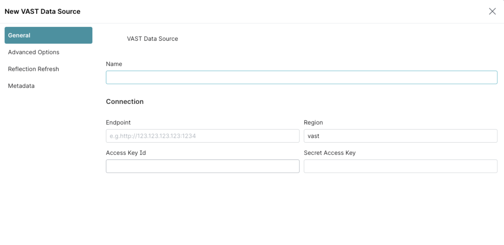
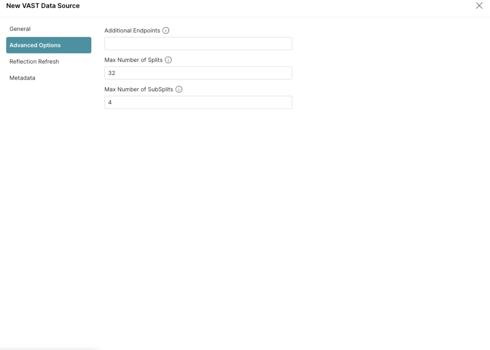

Dremio#
These instructions describe how to quickly try Dremo 24.0.0 with Vast Database.
Introduction#
Dremio is a powerful query engine designed for high-performance analytics on cloud data lakes, the combination delivers exceptional power and flexibility. Dremio’s ability to natively access and accelerate queries on vast datasets aligns perfectly with VAST’s scalable, disaggregated storage. Together, they provide a seamless, high-performance solution for organizations seeking to analyze petabytes of structured and unstructured data without the limitations of traditional data warehouses.
Instructions#
Run the following command.
mkdir dremio_docker
cd dremio_docker
# TODO: replace this with public URL
wget https://artifactory.vastdata.com/ui/repos/tree/General/vast-custom/tabular/connectors/dre[%E2%80%A6]3/20240901/dremio-vast-data-connector-3.0.3-SNAPSHOT.jar
cat <<'EOF' > Dockerfile
FROM openjdk:11-jdk as run
MAINTAINER Dremio
LABEL org.label-schema.name='dremio/dremio-oss'
LABEL org.label-schema.description='Dremio OSS.'
ARG DOWNLOAD_URL=https://download.dremio.com/community-server/24.0.0-202302100528110223-3a169b7c/dremio-community-24.0.0-202302100528110223-3a169b7c.tar.gz
RUN \
mkdir -p /opt/dremio \
&& mkdir -p /var/lib/dremio \
&& mkdir -p /var/run/dremio \
&& mkdir -p /var/log/dremio \
&& mkdir -p /opt/dremio/data \
\
&& groupadd --system dremio \
&& useradd --base-dir /var/lib/dremio --system --gid dremio dremio \
&& chown -R dremio:dremio /opt/dremio/data \
&& chown -R dremio:dremio /var/run/dremio \
&& chown -R dremio:dremio /var/log/dremio \
&& chown -R dremio:dremio /var/lib/dremio \
&& wget -q "${DOWNLOAD_URL}" -O dremio.tar.gz \
&& tar vxfz dremio.tar.gz -C /opt/dremio --strip-components=1 \
&& rm -rf dremio.tar.gz
ADD dremio-vast-data-connector-3.0.3-SNAPSHOT.jar /opt/dremio/jars/
EXPOSE 9047/tcp
EXPOSE 31010/tcp
EXPOSE 45678/tcp
USER dremio
WORKDIR /opt/dremio
ENV DREMIO_HOME /opt/dremio
ENV DREMIO_PID_DIR /var/run/dremio
ENV DREMIO_GC_LOGS_ENABLED="no"
ENV DREMIO_LOG_DIR="/var/log/dremio"
ENV SERVER_GC_OPTS="-XX:+PrintGCDetails"
ENTRYPOINT ["bin/dremio", "start-fg"]
EOF
docker build --platform linux/amd64 -t vast/dremio-oss .
docker run --platform linux/amd64 -p 9047:9047 -p 31010:31010 -p 45678:45678 -p 32010:32010 vast/dremio-oss
Then navigate to: http://HOSTNAME:9407
Adding a Data Source for VAST Data#
In Dremio choose to add a data source
In the
Add Data Sourcedialog, chooseVAST DataA dialog will be displayed for entering the details of your VAST Data server. 
Name is arbitrary and used by Dremio to uniquely identify the data source.
Endpoint is the URI of the VAST management node (ex.
http://myhost:9090)Region is the value to use for region with the VAST client
Access Key ID is the access key ID to use
Secret Access Key is the secret access key to use
Check the
Advanced OptionsAdditional Endpoints is a comma separated list of URIs for additional VAST Data endpoints that can be used for queries.
Max Number of Splits is the maximum number of queries that the original query can be split into for retrieving the results.
Max Number of SubSplits is the maximum number of subsplits to retrieve for each sub query.
When the settings are correct, click on the
Savebutton
Limitations#
Write Support#
Currently the VastDB Dremio connector does not support writing to the Database.
Query Pushdown#
In some cases parts of the query filter and limit can be evaluated by the VAST data server. This can mean that less data is transferred from the VAST Data server to Dremio and improve performance of a query.
If the entire filter can be pushed down, then it will be, but Dremio will still need to also evaluate the filter. This is to ensure correct results when a limit is used.
Filter Operations Pushed Down#
(<) Less than
(<=) Less than or equal to
(>) Greater than
(>=) Greater than or equal to
(=) Equal to
IS NULL
IS NOT NULL
More complex filters using the conditions above can be formed using AND/OR operators.
If the complete filter has a form of <EXPR1> AND <EXPR2> AND <EXPR3> AND ... then any
complete sub expression (EXPR1, EXPR2, EXPR3, etc) that can be pushed down will be.
Network Access#
All nodes in the Dremio cluster need to have network access to the VAST Data hosts.
Transactions#
Each table scan will use a separate transaction. This can create data consistency issues with table joins.
Unsupported Data Types#
uint8uint16uint32uint64
Data Type Transformation#
Some types are supported by VAST Data but not by Dremio but can be easily converted into types supported by Dremio. When processing a result set with these types, the connector will need to convert every value one at a time. This will add processing time.
Note that for the conversion from Char(n) to Varchar, the connector trims trailing whitespace.
Data Type Mapping#
VAST Data Type |
Dremio Data Type |
|---|---|
Time (μs) |
Time (ms) |
Date (day) |
Date (ms) |
Timestamp (μs) |
Timestamp (ms) |
Timestamp (ns) |
Timestamp (ms) |
Char(n) |
Varchar |